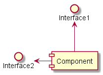

To be able to generate those diagrams, you must have Graphviz
software installed on your machine in the default directory c:\Program
Files\GraphvizX.XX or /usr/bin/dot.
You can have a look here if you have installed Graphviz somewhere else.
Let's have a fews examples :
You can also use the component keyword to defines a
component.
And you can define an alias, using the as
keyword.
This alias will be used latter, when defining relations.
@startuml [First component] [Another component] as Comp2 component Comp3 component [Last\ncomponent] as Comp4 @enduml |
() symbol (because this looks like a circle).
You can also use the interface keyword to defines an interface.
And you can define an alias, using the as keyword.
This alias will be used latter, when defining relations.
We will see latter that interface definition is optional.
@startuml () "First Interface" () "Another interface" as Interf2 interface Interf3 interface "Last\ninterface" as Interf4 @enduml |
Links between elements are made using combinations of dotted line
(..), straight line (--), and arrows (-->)
symbols.
@startuml DataAccess - [First Component] [First Component] ..> HTTP : use @enduml |
note left of , note right of ,
note top of , note bottom of
keywords to define notes related to a single object.
A note can be also define alone with the note
keywords, then linked to other objects using the .. symbol.
@startuml interface "Data Access" as DA DA - [First Component] [First Component] ..> HTTP : use note left of HTTP : Web Service only note right of [First Component] A note can also be on several lines end note @enduml |
packagenodefolderframeclouddatabase
@startuml
package "Some Group" {
HTTP - [First Component]
[Another Component]
}
node "Other Groups" {
FTP - [Second Component]
[First Component] --> FTP
}
cloud {
[Example 1]
}
database "MySql" {
folder "This is my folder" {
[Folder 3]
}
frame "Foo" {
[Frame 4]
}
}
[Another Component] --> [Example 1]
[Example 1] --> [Folder 3]
[Folder 3] --> [Frame 4]
@enduml
|
-- and are vertically oriented.
It is possible to use horizontal link by putting a single dash (or dot) like this:
@startuml [Component] --> Interface1 [Component] -> Interface2 @enduml |
@startuml Interface1 <-- [Component] Interface2 <- [Component] @enduml |
 |
left, right, up
or down keywords inside the arrow:
@startuml [Component] -left-> left [Component] -right-> right [Component] -up-> up [Component] -down-> down @enduml |
-d- instead of
-down-)
or the two first characters (-do-).
Please note that you should not abuse this functionality : Graphviz gives usually good results without tweaking.
title keywords is used to put a title.
You can use title and end title
keywords for a longer title, as in sequence diagrams.
@startuml title Very simple component\ndiagram interface "Data Access" as DA DA - [First Component] [First Component] ..> HTTP : use @enduml |
skinparam componentStyle uml2 command is used to switch to UML2 notation.
@startuml skinparam componentStyle uml2 interface "Data Access" as DA DA - [First Component] [First Component] ..> HTTP : use @enduml |
skinparam
command to change colors and fonts for the drawing.
You can use this command :
@startuml
skinparam component {
FontSize 13
InterfaceBackgroundColor RosyBrown
InterfaceBorderColor orange
BackgroundColor<<Apache>> Red
BorderColor<<Apache>> #FF6655
FontName Courier
BorderColor black
BackgroundColor gold
ArrowFontName Impact
ArrowColor #FF6655
ArrowFontColor #777777
}
() "Data Access" as DA
DA - [First Component]
[First Component] ..> () HTTP : use
HTTP - [Web Server] << Apache >>
@enduml
|
@startuml
[AA] <<static lib>>
[BB] <<shared lib>>
[CC] <<static lib>>
node node1
node node2 <<shared node>>
database Production
skinparam component {
backgroundColor<<static lib>> DarkKhaki
backgroundColor<<shared lib>> Green
}
skinparam node {
borderColor Green
backgroundColor Yellow
backgroundColor<<shared node>> Magenta
}
skinparam databaseBackgroundColor Aqua
@enduml
|